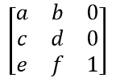

Matrix#
矩阵是一个用于图像变换的行优先 3x3 矩阵（符合 Adobe PDF 参考 中定义的相应概念）。通过矩阵，你可以以多种方式操控页面的渲染图像：（页面的）某些部分可以被旋转、缩放、翻转、剪切和平移，方法是设置六个浮动值中的一些或全部。
由于所有点或像素都位于二维空间中，因此该矩阵的一个列向量是一个常数单位向量，只有剩下的六个元素用于操作。这六个元素通常表示为 [a, b, c, d, e, f]。它们在矩阵中的位置如下所示：
请注意：
以下方法只是便利函数 – 它们所做的一切，也可以通过直接操作六个数值来实现。
所有操作可以组合使用 – 你可以在一次操作中构建一个同时进行旋转、剪切、缩放和平移等变换的矩阵。如果你选择这样做，请查看下面的 备注 或 Adobe PDF 参考。
方法 / 属性 |
描述 |
|---|---|
执行旋转 |
|
执行缩放 |
|
执行剪切（倾斜） |
|
执行平移（位移） |
|
执行矩阵乘法 |
|
计算逆矩阵 |
|
欧几里得范数 |
|
X 方向缩放因子 |
|
Y 方向剪切效果 |
|
X 方向剪切效果 |
|
Y 方向缩放因子 |
|
水平位移 |
|
垂直位移 |
|
如果矩形角仍然是矩形角则为 True |
类 API
- class Matrix#
- __init__(self)#
- __init__(self, zoom-x, zoom-y)#
- __init__(self, shear-x, shear-y, 1)#
- __init__(self, a, b, c, d, e, f)#
- __init__(self, matrix)#
- __init__(self, degree)#
- __init__(self, sequence)#
重载构造函数。
如果没有参数，将创建零矩阵 Matrix(0.0, 0.0, 0.0, 0.0, 0.0, 0.0)。
zoom-* 和 shear-* 分别指定缩放或剪切值（浮动），并分别创建缩放或剪切矩阵。
对于“matrix”，会创建另一个矩阵的 新副本 。
浮动值“degree”指定创建一个逆时针旋转矩阵。
“sequence”必须是一个包含 6 个浮动条目的 Python 序列对象（见 在 PyMuPDF 中使用 Python 序列作为参数）。
pymupdf.Matrix(1, 1) 和 pymupdf.Matrix(pymupdf.Identity) 创建可修改版本的 Identity 矩阵，其形态为 [1, 0, 0, 1, 0, 0]。
- norm()#
版本 1.16.0 新增
返回矩阵的欧几里得范数作为向量。
- prerotate(deg)#
修改矩阵以执行逆时针旋转，旋转角度为正 deg 度，反之为顺时针。单位矩阵的矩阵元素将按以下方式更改：
[1, 0, 0, 1, 0, 0] -> [cos(deg), sin(deg), -sin(deg), cos(deg), 0, 0]。
- 参数:
deg (float) – 旋转角度（以 Pi = 180 度为基础使用常规符号）。
- prescale(sx, sy)#
修改矩阵以按缩放因子 sx 和 sy 进行缩放。仅影响属性 a 到 d： [a, b, c, d, e, f] -> [a*sx, b*sx, c*sy, d*sy, e, f]。
- 参数:
sx (float) – X 方向的缩放因子。效果见属性 a 的描述。
sy (float) – Y 方向的缩放因子。效果见属性 d 的描述。
- preshear(sx, sy)#
修改矩阵以执行剪切操作，即将矩形转换为平行四边形（菱形）。仅影响属性 a 到 d： [a, b, c, d, e, f] -> [c*sy, d*sy, a*sx, b*sx, e, f]。
- 参数:
sx (float) – X 方向的剪切效果。见属性 c。
sy (float) – Y 方向的剪切效果。见属性 b。
- pretranslate(tx, ty)#
修改矩阵以沿 x 和/或 y 轴执行位移 / 平移操作。仅影响属性 e 和 f： [a, b, c, d, e, f] -> [a, b, c, d, tx*a + ty*c, tx*b + ty*d]。
- 参数:
tx (float) – X 方向的平移效果。见属性 e。
ty (float) – Y 方向的平移效果。见属性 f。
- concat(m1, m2)#
计算矩阵积 m1 * m2 并将结果存储在当前矩阵中。m1 或 m2 中的任何一个可以是当前矩阵。请注意，矩阵乘法是非交换的。所以 m1 和 m2 的顺序很重要。
- invert(m=None)#
计算 m 的矩阵逆，并将结果存储在当前矩阵中。如果 m 不可逆（“退化”），则返回 1。在这种情况下，当前矩阵 不会改变 。如果 m 可逆，则返回 0，并且当前矩阵被替换为 m 的逆矩阵。
- 参数:
m (Matrix) – 要反转的矩阵。如果未提供，则使用当前矩阵。
- 返回类型:
int
- a#
X 方向的缩放因子 (宽度)。例如，值为 0.5 时， 宽度 会缩小一倍。如果 a < 0，则会发生左右翻转。
- Type:
float
- b#
引起剪切效果：每个
Point(x, y)将变为Point(x, y - b*x)。因此，水平线将“倾斜”。- Type:
float
- c#
引起剪切效果：每个
Point(x, y)将变为Point(x - c*y, y)。因此，垂直线将“倾斜”。- Type:
float
- d#
Y 方向的缩放因子 (高度)。例如，值为 1.5 时， 高度 会拉伸 50%。如果 d < 0，则会发生上下翻转。
- Type:
float
- e#
引起水平位移效果：每个 Point(x, y) 将变为 Point(x + e, y)。正（负）值的 e 将向右（左）位移。
- Type:
float
- f#
引起垂直位移效果：每个 Point(x, y) 将变为 Point(x, y - f)。正（负）值的 f 将向下（上）位移。
- Type:
float
- is_rectilinear#
直线性意味着没有剪切，并且任何旋转都是 90 度的整数倍。通常用于确认（轴对齐的）矩形在变换前后仍然是轴对齐矩形。
- Type:
bool
备注
本类遵循 Python 序列协议，因此可以通过索引访问组件。参见 在 PyMuPDF 中使用 Python 序列作为参数。
矩阵可以像普通数字一样与算术运算符一起使用：它们可以加、减、乘或除 – 见 几何对象的运算符代数 章节。
矩阵乘法是 非交换的 – 改变乘法因子的顺序通常会改变结果。因此，变换的结果可能会变得不明确。
Matrix is a row-major 3x3 matrix used by image transformations in MuPDF (which complies with the respective concepts laid down in the Adobe PDF 参考). With matrices you can manipulate the rendered image of a page in a variety of ways: (parts of) the page can be rotated, zoomed, flipped, sheared and shifted by setting some or all of just six float values.
Since all points or pixels live in a two-dimensional space, one column vector of that matrix is a constant unit vector, and only the remaining six elements are used for manipulations. These six elements are usually represented by [a, b, c, d, e, f]. Here is how they are positioned in the matrix:
Please note:
the below methods are just convenience functions – everything they do, can also be achieved by directly manipulating the six numerical values
all manipulations can be combined – you can construct a matrix that rotates and shears and scales and shifts, etc. in one go. If you however choose to do this, do have a look at the remarks further down or at the Adobe PDF 参考.
Method / Attribute |
Description |
|---|---|
perform a rotation |
|
perform a scaling |
|
perform a shearing (skewing) |
|
perform a translation (shifting) |
|
perform a matrix multiplication |
|
calculate the inverted matrix |
|
the Euclidean norm |
|
zoom factor X direction |
|
shearing effect Y direction |
|
shearing effect X direction |
|
zoom factor Y direction |
|
horizontal shift |
|
vertical shift |
|
true if rect corners will remain rect corners |
Class API
备注
This class adheres to the Python sequence protocol, so components can be accessed via their index, too. Also refer to 在 PyMuPDF 中使用 Python 序列作为参数.
Matrices can be used with arithmetic operators almost like ordinary numbers: they can be added, subtracted, multiplied or divided – see chapter 几何对象的运算符代数.
Matrix multiplication is not commutative – changing the sequence of the multiplicands will change the result in general. So it can quickly become unclear which result a transformation will yield.
例子#
Examples
以下是一些示例，展示了一些可以实现的效果。所有图片都显示了一些文本，这些文本在某个矩阵的控制下相对于一个固定的参考点（红点）插入。
Identity 矩阵不执行任何操作。
{kind=link}
缩放矩阵
Matrix(2, 0.5)在水平方向上按因子 2 拉伸，在垂直方向上按因子 0.5 收缩。
{kind=link}
{kind=link}
负的
Matrix.a会导致左右翻转。
{kind=link}
负的
Matrix.d会导致上下翻转。
{kind=link}
属性
Matrix.b沿 x 轴向上/向下倾斜。
{kind=link}
属性
Matrix.c沿 y 轴向左/向右倾斜。
{kind=link}
矩阵
Matrix(beta)对正角度beta进行逆时针旋转。
{kind=link}
展示对矩形的效果:
import pymupdf # 仅定义和临时 PDF RED = (1, 0, 0) BLUE = (0, 0, 1) GREEN = (0, 1, 0) doc = pymupdf.open() page = doc.new_page() # 矩形 r1 = pymupdf.Rect(100, 100, 200, 200) # 在 x 方向缩小 50%，在 y 方向放大 50% mat1 = pymupdf.Matrix(0.5, 1.5) # 在两个方向上平移 50 mat2 = pymupdf.Matrix(1, 0, 0, 1, 50, 50) # 绘制相应的矩形 page.draw_rect(r1, color=RED) # 原始矩形 page.draw_rect(r1 * mat1, color=GREEN) # 缩放后的矩形 page.draw_rect(r1 * mat2, color=BLUE) # 平移后的矩形 doc.ez_save("matrix-effects.pdf")
Here are examples that illustrate some of the achievable effects. All pictures show some text, inserted under control of some matrix and relative to a fixed reference point (the red dot).
The Identity matrix performs no operation.
The scaling matrix
Matrix(2, 0.5)stretches by a factor of 2 in horizontal, and shrinks by factor 0.5 in vertical direction.
Attributes
Matrix.eandMatrix.fshift horizontally and, respectively vertically. In the following 10 to the right and 20 down.
A negative
Matrix.acauses a left-right flip.
A negative
Matrix.dcauses an up-down flip.
Attribute
Matrix.btilts upwards / downwards along the x-axis.
Attribute
Matrix.ctilts left / right along the y-axis.
Matrix
Matrix(beta)performs counterclockwise rotations for positive anglesbeta.
Show some effects on a rectangle:
import pymupdf # just definitions and a temp PDF RED = (1, 0, 0) BLUE = (0, 0, 1) GREEN = (0, 1, 0) doc = pymupdf.open() page = doc.new_page() # rectangle r1 = pymupdf.Rect(100, 100, 200, 200) # scales down by 50% in x- and up by 50% in y-direction mat1 = pymupdf.Matrix(0.5, 1.5) # shifts by 50 in both directions mat2 = pymupdf.Matrix(1, 0, 0, 1, 50, 50) # draw corresponding rectangles page.draw_rect(r1, color=RED) # original page.draw_rect(r1 * mat1, color=GREEN) # scaled page.draw_rect(r1 * mat2, color=BLUE) # shifted doc.ez_save("matrix-effects.pdf")
{kind=link}